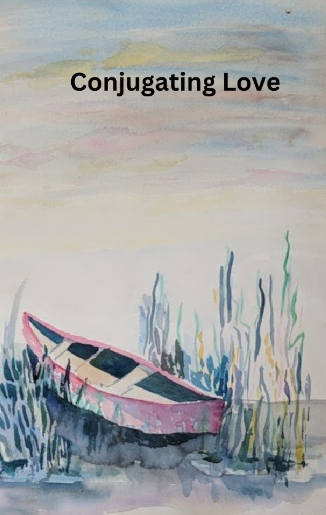

A Meditation
By Lois Welling Sullivan
Conjugating Love is a poetic meditation on the many dimensions of love, explored through reflection, memory, spirituality, and personal experience.
Rather than treating love as a single emotion, Lois Sullivan examines love as a living force that shapes relationships, identity, family, compassion, and personal growth.
Through poetry, contemplation, and artwork, the book invites readers to pause, reflect, and consider the ways love influences the course of a life.
The volume combines Lois Sullivan's writing with her original watercolor artwork, creating a conversation between image and text.
Each visual element complements the reflective tone of the poetry and contributes to the book's atmosphere of contemplation and quiet beauty.
Together, the words and artwork provide a uniquely personal expression of faith, family, memory, and connection.
Conjugating Love was developed from the writings and artwork of Lois Sullivan preserved within the Sullivan Family Archive.
Published by DWS Press, the work presents a carefully curated collection of poetry, reflections, and watercolor illustrations.
The book represents a different dimension of Lois Sullivan's creative legacy beyond autobiography and family history.